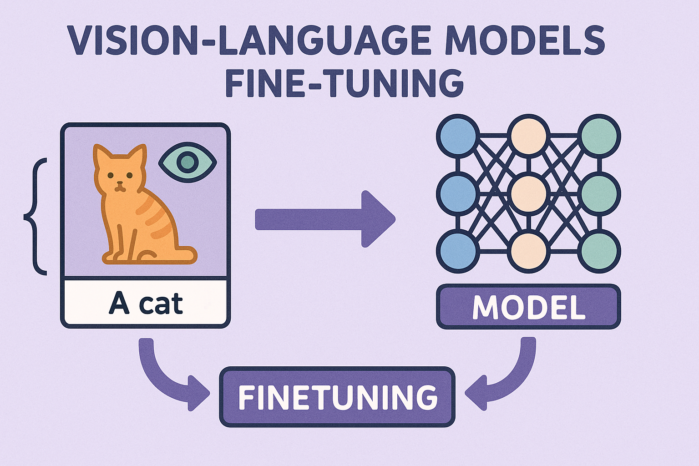

# Example data structure for image-text pairs
import json
example_data = {
"image_path": "path/to/image.jpg",
"caption": "A detailed description of the image",
"metadata": {
"source": "dataset_name",
"quality_score": 0.95,
"language": "en"
}
}
print(json.dumps(example_data, indent=2))Fine-tuning Vision-Language Models: A Comprehensive Guide

Introduction
Vision-Language Models (VLMs) represent a significant advancement in artificial intelligence, combining computer vision and natural language processing to understand and generate content that bridges visual and textual modalities. Fine-tuning these models for specific tasks and domains has become crucial for achieving optimal performance in real-world applications.
This comprehensive guide explores the intricacies of fine-tuning VLMs, from theoretical foundations to practical implementation strategies. Whether you’re adapting models like CLIP, BLIP, or more recent architectures like GPT-4V or LLaVA, this article provides the knowledge needed to successfully customize these powerful models for your specific use cases.
Understanding Vision-Language Models
Architecture Overview
Vision-Language Models typically consist of three main components:
Vision Encoder: Processes visual input (images, videos) and extracts meaningful features. Common architectures include:
- Vision Transformers (ViTs)
- Convolutional Neural Networks (CNNs)
- Hybrid architectures combining both approaches
Language Encoder/Decoder: Handles textual input and output generation. This component often leverages:
- Transformer-based architectures
- Pre-trained language models (BERT, GPT variants)
- Specialized language models designed for multimodal tasks
Cross-Modal Fusion: Integrates information from both modalities through:
- Attention mechanisms
- Cross-modal transformers
- Contrastive learning approaches
- Multimodal fusion layers
Popular VLM Architectures
CLIP (Contrastive Language-Image Pre-training)
CLIP learns visual concepts from natural language supervision by training on image-text pairs using contrastive learning. It consists of separate image and text encoders that map inputs to a shared embedding space.
BLIP (Bootstrapping Language-Image Pre-training)
BLIP introduces a multimodal mixture of encoder-decoder architecture that can handle various vision-language tasks through unified pre-training objectives.
LLaVA (Large Language and Vision Assistant)
LLaVA connects a vision encoder with a large language model, enabling instruction-following capabilities for multimodal tasks.
GPT-4V and Similar Models
Recent large-scale models that integrate vision capabilities directly into large language models, offering sophisticated reasoning across modalities.
Types of Fine-tuning
Full Fine-tuning
Complete parameter updates across the entire model architecture. This approach offers maximum flexibility but requires substantial computational resources and carefully curated datasets.
Advantages:
- Maximum adaptation potential
- Can learn complex task-specific patterns
- Suitable for significantly different domains
Disadvantages:
- Computationally expensive
- Risk of catastrophic forgetting
- Requires large datasets
Parameter-Efficient Fine-tuning (PEFT)
Low-Rank Adaptation (LoRA)
LoRA introduces trainable low-rank matrices to approximate weight updates, significantly reducing the number of trainable parameters while maintaining performance.
Implementation: Instead of updating weight matrix W, LoRA learns decomposition W + BA, where B and A are much smaller matrices.
Adapters
Small neural network modules inserted between transformer layers, allowing task-specific adaptation while keeping the original model frozen.
Prompt Tuning
Learning continuous prompt embeddings that guide the model’s behavior without modifying the underlying parameters.
Prefix Tuning
Similar to prompt tuning but focuses on learning continuous task-specific vectors prepended to the input sequence.
Layer-wise Fine-tuning
Selective unfreezing and training of specific model layers, often starting from the top layers and gradually including lower layers.
Task-specific Head Fine-tuning
Adding and training new classification or regression heads while keeping the backbone frozen, suitable for discriminative tasks.
Data Preparation
Dataset Requirements
Quality over Quantity: High-quality, well-annotated data is more valuable than large volumes of noisy data. Each image-text pair should be:
- Semantically aligned
- Descriptively accurate
- Relevant to the target task
Data Diversity: Ensure representation across:
- Visual concepts and scenes
- Linguistic patterns and styles
- Cultural and demographic diversity
- Various lighting conditions and viewpoints
Data Formats and Standards
Image-Text Pairs
Instruction-Following Format
# Example instruction-following format
instruction_data = {
"image": "path/to/image.jpg",
"conversations": [
{
"from": "human",
"value": "What objects are visible in this image?"
},
{
"from": "gpt",
"value": "I can see a red bicycle, a wooden bench, and several trees in the background."
}
]
}
print(json.dumps(instruction_data, indent=2))Data Preprocessing
Image Preprocessing:
- Normalization using pre-training statistics
- Consistent resizing and aspect ratio handling
- Data augmentation strategies (rotation, cropping, color jittering)
- Format standardization (RGB, resolution)
Text Preprocessing:
- Tokenization using model-specific tokenizers
- Length normalization and truncation
- Special token handling
- Encoding consistency
Data Augmentation Strategies
Visual Augmentations:
- Geometric transformations (rotation, scaling, flipping)
- Color space modifications
- Noise injection
- Cutout and mixup techniques
Textual Augmentations:
- Paraphrasing using language models
- Synonym replacement
- Back-translation
- Template-based generation
Cross-modal Augmentations:
- Hard negative mining
- Curriculum learning approaches
- Multi-view consistency training
Fine-tuning Strategies
Curriculum Learning
Gradually increasing task complexity during training, starting with simpler examples and progressing to more challenging ones.
Implementation Strategies:
- Easy-to-hard example ordering
- Confidence-based sample selection
- Multi-stage training protocols
Multi-task Learning
Training on multiple related tasks simultaneously to improve generalization and transfer learning capabilities.
Task Selection Criteria:
- Complementary skill requirements
- Shared visual or linguistic patterns
- Balanced computational requirements
Domain Adaptation Techniques
Adversarial Training
Using domain discriminators to learn domain-invariant features while maintaining task performance.
Gradual Domain Shift
Progressively adapting from source to target domain through intermediate domains or synthetic data.
Self-supervised Pre-training
Leveraging unlabeled data from the target domain through self-supervised objectives before fine-tuning.
Regularization Techniques
Weight Decay and Dropout: Standard regularization methods to prevent overfitting.
Knowledge Distillation: Using a larger teacher model to guide the training of a smaller student model.
Elastic Weight Consolidation (EWC): Preventing catastrophic forgetting by constraining important parameters based on Fisher information.
Technical Implementation
Environment Setup
# Required libraries
import torch
import torch.nn as nn
import transformers
from transformers import AutoProcessor, AutoModel
from torch.utils.data import DataLoader, Dataset
import pytorch_lightning as pl
from PIL import Image
import json
import numpy as np
import matplotlib.pyplot as pltModel Loading and Configuration
class VLMFineTuner(pl.LightningModule):
def __init__(self, model_name, learning_rate=1e-4, freeze_vision=False):
super().__init__()
self.model = AutoModel.from_pretrained(model_name)
self.processor = AutoProcessor.from_pretrained(model_name)
self.learning_rate = learning_rate
# Freeze vision encoder if specified
if freeze_vision:
for param in self.model.vision_model.parameters():
param.requires_grad = False
def configure_optimizers(self):
return torch.optim.AdamW(
filter(lambda p: p.requires_grad, self.parameters()),
lr=self.learning_rate,
weight_decay=0.01
)
def training_step(self, batch, batch_idx):
outputs = self.model(**batch)
loss = outputs.loss
self.log('train_loss', loss, prog_bar=True)
return loss
def validation_step(self, batch, batch_idx):
outputs = self.model(**batch)
loss = outputs.loss
self.log('val_loss', loss, prog_bar=True)
return lossCustom Dataset Implementation
class VisionLanguageDataset(Dataset):
def __init__(self, data_path, processor, max_length=512):
with open(data_path, 'r') as f:
self.data = json.load(f)
self.processor = processor
self.max_length = max_length
def __len__(self):
return len(self.data)
def __getitem__(self, idx):
item = self.data[idx]
image = Image.open(item['image_path']).convert('RGB')
text = item['caption']
# Process inputs
inputs = self.processor(
images=image,
text=text,
return_tensors="pt",
padding=True,
truncation=True,
max_length=self.max_length
)
return {
'pixel_values': inputs['pixel_values'].squeeze(),
'input_ids': inputs['input_ids'].squeeze(),
'attention_mask': inputs['attention_mask'].squeeze(),
'labels': inputs['input_ids'].squeeze()
}LoRA Implementation
class LoRALayer(nn.Module):
def __init__(self, in_features, out_features, rank=16, alpha=16):
super().__init__()
self.rank = rank
self.alpha = alpha
self.lora_A = nn.Parameter(torch.randn(rank, in_features))
self.lora_B = nn.Parameter(torch.zeros(out_features, rank))
self.scaling = self.alpha / self.rank
def forward(self, x, original_forward):
result = original_forward(x)
lora_result = (x @ self.lora_A.T @ self.lora_B.T) * self.scaling
return result + lora_result
def apply_lora_to_model(model, rank=16, alpha=16, target_modules=None):
"""Apply LoRA to specified modules in the model"""
if target_modules is None:
target_modules = ['query', 'key', 'value', 'dense']
for name, module in model.named_modules():
if any(target in name for target in target_modules):
if isinstance(module, nn.Linear):
lora_layer = LoRALayer(
module.in_features,
module.out_features,
rank,
alpha
)
# Replace the module with LoRA-enhanced version
parent = model
for attr in name.split('.')[:-1]:
parent = getattr(parent, attr)
setattr(parent, name.split('.')[-1], lora_layer)
return modelTraining Loop
def train_model(model, train_loader, val_loader, num_epochs=5):
"""Train the VLM with comprehensive monitoring and checkpointing"""
# Setup callbacks
callbacks = [
pl.callbacks.ModelCheckpoint(
monitor='val_loss',
mode='min',
save_top_k=3,
filename='{epoch}-{val_loss:.2f}'
),
pl.callbacks.EarlyStopping(
monitor='val_loss',
patience=3,
mode='min'
),
pl.callbacks.LearningRateMonitor(logging_interval='step')
]
# Setup trainer
trainer = pl.Trainer(
max_epochs=num_epochs,
accelerator='gpu' if torch.cuda.is_available() else 'cpu',
precision=16, # Mixed precision training
gradient_clip_val=1.0,
accumulate_grad_batches=4,
val_check_interval=0.5,
callbacks=callbacks,
logger=pl.loggers.TensorBoardLogger('logs/')
)
# Train the model
trainer.fit(model, train_loader, val_loader)
return trainer
# Example usage
def main():
# Initialize model
model = VLMFineTuner(
model_name="Salesforce/blip2-opt-2.7b",
learning_rate=1e-4,
freeze_vision=True
)
# Create datasets
train_dataset = VisionLanguageDataset(
'train_data.json',
model.processor
)
val_dataset = VisionLanguageDataset(
'val_data.json',
model.processor
)
# Create data loaders
train_loader = DataLoader(
train_dataset,
batch_size=8,
shuffle=True,
num_workers=4
)
val_loader = DataLoader(
val_dataset,
batch_size=8,
shuffle=False,
num_workers=4
)
# Train model
trainer = train_model(model, train_loader, val_loader, num_epochs=10)
if __name__ == "__main__":
main()Evaluation and Metrics
Task-specific Metrics
import torch
from torchmetrics.text import BLEUScore, ROUGEScore
from torchmetrics.retrieval import RetrievalRecall
class VLMEvaluator:
def __init__(self):
self.bleu = BLEUScore()
self.rouge = ROUGEScore()
self.recall_at_k = RetrievalRecall(k=5)
def evaluate_captioning(self, predictions, references):
"""Evaluate image captioning performance"""
metrics = {}
# BLEU scores
metrics['bleu_1'] = self.bleu(predictions, references, n_gram=1)
metrics['bleu_4'] = self.bleu(predictions, references, n_gram=4)
# ROUGE-L
metrics['rouge_l'] = self.rouge(predictions, references)
return metrics
def evaluate_retrieval(self, query_embeddings, candidate_embeddings, relevance_labels):
"""Evaluate image-text retrieval performance"""
# Calculate similarity scores
similarity_scores = torch.mm(query_embeddings, candidate_embeddings.T)
# Calculate recall@k
recall = self.recall_at_k(similarity_scores, relevance_labels)
return {'recall_at_5': recall}
def evaluate_vqa(self, predictions, ground_truth):
"""Evaluate Visual Question Answering performance"""
# Simple accuracy for classification-style VQA
correct = sum(p.strip().lower() == gt.strip().lower()
for p, gt in zip(predictions, ground_truth))
accuracy = correct / len(predictions)
return {'accuracy': accuracy}
# Example evaluation pipeline
def run_evaluation(model, test_loader, evaluator):
model.eval()
all_predictions = []
all_references = []
with torch.no_grad():
for batch in test_loader:
# Generate predictions (implementation depends on task)
outputs = model.generate(**batch)
predictions = model.processor.batch_decode(
outputs, skip_special_tokens=True
)
all_predictions.extend(predictions)
all_references.extend(batch['references'])
# Evaluate performance
metrics = evaluator.evaluate_captioning(all_predictions, all_references)
return metricsCross-modal Understanding Metrics
Semantic Similarity: Measuring the alignment between visual and textual representations using cosine similarity or other distance metrics.
Cross-modal Retrieval Performance: Evaluating how well the model can retrieve relevant text given an image and vice versa.
Compositional Understanding: Testing the model’s ability to understand complex scenes with multiple objects and relationships.
Evaluation Protocols
Zero-shot Evaluation: Testing on unseen categories or domains without additional training.
Few-shot Learning: Evaluating adaptation capabilities with limited examples.
Robustness Testing: Assessing performance under various conditions such as:
- Different lighting conditions
- Occlusions and partial views
- Adversarial examples
- Out-of-distribution data
Common Challenges and Solutions
Catastrophic Forgetting
Problem: Fine-tuning can cause models to forget previously learned knowledge.
Solutions:
- Elastic Weight Consolidation (EWC)
- Progressive neural networks
- Memory replay techniques
- Regularization-based approaches
class EWCLoss(nn.Module):
"""Elastic Weight Consolidation loss for preventing catastrophic forgetting"""
def __init__(self, model, dataset, importance=1000):
super().__init__()
self.model = model
self.importance = importance
self.fisher_information = self._compute_fisher_information(dataset)
self.optimal_params = {name: param.clone()
for name, param in model.named_parameters()}
def _compute_fisher_information(self, dataset):
"""Compute Fisher Information Matrix"""
fisher = {}
for name, param in self.model.named_parameters():
fisher[name] = torch.zeros_like(param)
self.model.eval()
for batch in dataset:
self.model.zero_grad()
output = self.model(**batch)
loss = output.loss
loss.backward()
for name, param in self.model.named_parameters():
if param.grad is not None:
fisher[name] += param.grad.pow(2)
# Normalize by dataset size
for name in fisher:
fisher[name] /= len(dataset)
return fisher
def forward(self, current_loss):
"""Add EWC penalty to current loss"""
ewc_loss = 0
for name, param in self.model.named_parameters():
if name in self.fisher_information:
ewc_loss += (self.fisher_information[name] *
(param - self.optimal_params[name]).pow(2)).sum()
return current_loss + self.importance * ewc_lossMode Collapse
Problem: The model becomes overly specialized and loses diversity in outputs.
Solutions:
- Diverse training data
- Regularization techniques
- Multi-task training
- Curriculum learning
Data Efficiency
Problem: Limited labeled data for specific domains or tasks.
Solutions:
- Few-shot learning techniques
- Data augmentation strategies
- Self-supervised pre-training
- Transfer learning from related tasks
Computational Constraints
Problem: Limited computational resources for training large VLMs.
Solutions:
- Parameter-efficient fine-tuning (LoRA, adapters)
- Gradient checkpointing
- Mixed precision training
- Model pruning and quantization
Evaluation Challenges
Problem: Difficulty in comprehensively evaluating multimodal understanding.
Solutions:
- Multi-faceted evaluation frameworks
- Human evaluation protocols
- Automated evaluation metrics
- Benchmark development
Best Practices
Model Selection
Choose the appropriate base model based on:
- Task requirements and complexity
- Available computational resources
- Target domain characteristics
- Performance-efficiency trade-offs
Hyperparameter Optimization
import optuna
from optuna.integration import PyTorchLightningPruningCallback
def objective(trial):
"""Optuna objective function for hyperparameter optimization"""
# Suggest hyperparameters
learning_rate = trial.suggest_float('learning_rate', 1e-5, 1e-3, log=True)
batch_size = trial.suggest_categorical('batch_size', [4, 8, 16, 32])
rank = trial.suggest_int('lora_rank', 8, 64, step=8)
alpha = trial.suggest_int('lora_alpha', 8, 64, step=8)
# Create model with suggested hyperparameters
model = VLMFineTuner(
model_name="Salesforce/blip2-opt-2.7b",
learning_rate=learning_rate
)
# Apply LoRA with suggested parameters
model = apply_lora_to_model(model, rank=rank, alpha=alpha)
# Create data loaders with suggested batch size
train_loader = DataLoader(train_dataset, batch_size=batch_size, shuffle=True)
val_loader = DataLoader(val_dataset, batch_size=batch_size, shuffle=False)
# Setup trainer with pruning callback
trainer = pl.Trainer(
max_epochs=5,
callbacks=[PyTorchLightningPruningCallback(trial, monitor="val_loss")],
logger=False,
enable_checkpointing=False
)
# Train and return validation loss
trainer.fit(model, train_loader, val_loader)
return trainer.callback_metrics["val_loss"].item()
# Run optimization
study = optuna.create_study(direction='minimize')
study.optimize(objective, n_trials=50)
print("Best hyperparameters:", study.best_params)Data Management
Implement robust data pipelines:
- Version control for datasets
- Data quality validation
- Efficient data loading and preprocessing
- Balanced sampling strategies
Monitoring and Debugging
import wandb
from pytorch_lightning.loggers import WandbLogger
class AdvancedVLMTrainer(pl.LightningModule):
def __init__(self, *args, **kwargs):
super().__init__(*args, **kwargs)
self.validation_outputs = []
def training_step(self, batch, batch_idx):
outputs = self.model(**batch)
loss = outputs.loss
# Log detailed metrics
self.log('train_loss', loss, prog_bar=True)
self.log('learning_rate', self.optimizers().param_groups[0]['lr'])
# Log gradient norms
total_norm = 0
for p in self.parameters():
if p.grad is not None:
param_norm = p.grad.data.norm(2)
total_norm += param_norm.item() ** 2
total_norm = total_norm ** (1. / 2)
self.log('gradient_norm', total_norm)
return loss
def validation_step(self, batch, batch_idx):
outputs = self.model(**batch)
loss = outputs.loss
self.log('val_loss', loss, prog_bar=True)
self.validation_outputs.append({
'loss': loss,
'predictions': outputs.logits.argmax(dim=-1),
'targets': batch['labels']
})
return loss
def on_validation_epoch_end(self):
# Compute additional metrics
all_preds = torch.cat([x['predictions'] for x in self.validation_outputs])
all_targets = torch.cat([x['targets'] for x in self.validation_outputs])
# Example: compute accuracy
accuracy = (all_preds == all_targets).float().mean()
self.log('val_accuracy', accuracy)
# Clear validation outputs
self.validation_outputs.clear()
# Setup advanced logging
wandb_logger = WandbLogger(project="vlm-finetuning")
trainer = pl.Trainer(
logger=wandb_logger,
callbacks=[
pl.callbacks.ModelCheckpoint(monitor='val_loss'),
pl.callbacks.LearningRateMonitor()
]
)Reproducibility
Ensure experimental reproducibility:
import random
import os
def set_seed(seed=42):
"""Set seed for reproducibility"""
random.seed(seed)
np.random.seed(seed)
torch.manual_seed(seed)
torch.cuda.manual_seed(seed)
torch.cuda.manual_seed_all(seed)
torch.backends.cudnn.deterministic = True
torch.backends.cudnn.benchmark = False
os.environ['PYTHONHASHSEED'] = str(seed)
# Set seed at the beginning of experiments
set_seed(42)Case Studies
Case Study 1: Medical Image Analysis
Objective: Fine-tune a VLM for radiology report generation.
Approach:
- Base model: BLIP-2
- Dataset: MIMIC-CXR with chest X-rays and reports
- Fine-tuning strategy: LoRA with frozen vision encoder
- Evaluation: BLEU, ROUGE, clinical accuracy metrics
# Medical domain-specific preprocessing
class MedicalImageProcessor:
def __init__(self, processor):
self.processor = processor
self.medical_vocab = self._load_medical_vocabulary()
def _load_medical_vocabulary(self):
"""Load medical terminology and abbreviations"""
return {
'CXR': 'chest X-ray',
'AP': 'anteroposterior',
'PA': 'posteroanterior',
# ... more medical terms
}
def preprocess_report(self, report):
"""Expand medical abbreviations and normalize text"""
for abbrev, full_form in self.medical_vocab.items():
report = report.replace(abbrev, full_form)
return report
# Specialized evaluation for medical domain
class MedicalEvaluator:
def __init__(self):
self.clinical_keywords = [
'pneumonia', 'pneumothorax', 'pleural_effusion',
'cardiomegaly', 'atelectasis'
]
def evaluate_clinical_accuracy(self, predictions, references):
"""Evaluate clinical finding detection accuracy"""
accuracy_scores = {}
for keyword in self.clinical_keywords:
pred_positive = [keyword.lower() in pred.lower() for pred in predictions]
ref_positive = [keyword.lower() in ref.lower() for ref in references]
# Calculate precision, recall, F1
tp = sum(p and r for p, r in zip(pred_positive, ref_positive))
fp = sum(p and not r for p, r in zip(pred_positive, ref_positive))
fn = sum(not p and r for p, r in zip(pred_positive, ref_positive))
precision = tp / (tp + fp) if (tp + fp) > 0 else 0
recall = tp / (tp + fn) if (tp + fn) > 0 else 0
f1 = 2 * precision * recall / (precision + recall) if (precision + recall) > 0 else 0
accuracy_scores[keyword] = {
'precision': precision,
'recall': recall,
'f1': f1
}
return accuracy_scoresResults: Achieved 15% improvement in clinical accuracy while maintaining general language capabilities.
Key Insights:
- Domain-specific vocabulary required careful handling
- Multi-task training with classification improved performance
- Regular validation with medical experts was crucial
Case Study 2: E-commerce Product Description
Objective: Develop automated product description generation from images.
Approach:
- Base model: LLaVA
- Dataset: Custom e-commerce image-description pairs
- Fine-tuning strategy: Full fine-tuning with curriculum learning
- Evaluation: Human preference scores, conversion metrics
class EcommerceDataProcessor:
def __init__(self):
self.category_templates = {
'clothing': "This {color} {item_type} features {description}. Perfect for {occasion}.",
'electronics': "The {brand} {product_name} offers {features}. Ideal for {use_case}.",
'home': "This {material} {item_type} brings {style} to your {room}."
}
def generate_template_augmentations(self, product_data):
"""Generate template-based augmentations for training data"""
category = product_data['category']
template = self.category_templates.get(category, "")
if template:
return template.format(**product_data)
return product_data['original_description']
# A/B testing framework for real-world validation
class ABTestingFramework:
def __init__(self):
self.test_groups = {}
self.metrics = {}
def assign_user_to_group(self, user_id, test_name):
"""Assign user to control or treatment group"""
import hashlib
hash_val = int(hashlib.md5(f"{user_id}_{test_name}".encode()).hexdigest(), 16)
return "treatment" if hash_val % 2 == 0 else "control"
def log_conversion(self, user_id, test_name, converted):
"""Log conversion event for analysis"""
if test_name not in self.metrics:
self.metrics[test_name] = {'control': [], 'treatment': []}
group = self.assign_user_to_group(user_id, test_name)
self.metrics[test_name][group].append(converted)
def analyze_results(self, test_name):
"""Analyze A/B test results"""
control_conversions = self.metrics[test_name]['control']
treatment_conversions = self.metrics[test_name]['treatment']
control_rate = sum(control_conversions) / len(control_conversions)
treatment_rate = sum(treatment_conversions) / len(treatment_conversions)
return {
'control_rate': control_rate,
'treatment_rate': treatment_rate,
'lift': (treatment_rate - control_rate) / control_rate * 100
}Results: Generated descriptions led to 12% increase in click-through rates.
Key Insights:
- Brand-specific terminology required specialized training
- A/B testing was essential for real-world validation
- Template-based augmentation improved consistency
Case Study 3: Educational Content Creation
Objective: Create an assistant for generating educational materials from visual content.
Approach:
- Base model: GPT-4V (via API fine-tuning)
- Dataset: Educational images with detailed explanations
- Fine-tuning strategy: Instruction tuning with reinforcement learning
- Evaluation: Educational effectiveness metrics, user engagement
class EducationalContentGenerator:
def __init__(self, difficulty_levels=['elementary', 'middle', 'high_school', 'college']):
self.difficulty_levels = difficulty_levels
self.pedagogical_templates = {
'elementary': {
'vocabulary': 'simple',
'sentence_length': 'short',
'examples': 'concrete',
'analogies': 'familiar'
},
'middle': {
'vocabulary': 'intermediate',
'sentence_length': 'medium',
'examples': 'relatable',
'analogies': 'accessible'
},
'high_school': {
'vocabulary': 'advanced',
'sentence_length': 'varied',
'examples': 'detailed',
'analogies': 'sophisticated'
},
'college': {
'vocabulary': 'technical',
'sentence_length': 'complex',
'examples': 'comprehensive',
'analogies': 'abstract'
}
}
def adapt_content_difficulty(self, content, target_level):
"""Adapt educational content to target difficulty level"""
template = self.pedagogical_templates[target_level]
# This would integrate with the VLM to generate level-appropriate content
adapted_prompt = f"""
Explain this concept for {target_level} students using:
- {template['vocabulary']} vocabulary
- {template['sentence_length']} sentences
- {template['examples']} examples
- {template['analogies']} analogies
Original content: {content}
"""
return adapted_prompt
# Reinforcement Learning from Human Feedback (RLHF) implementation
class EducationalRLHF:
def __init__(self, model, reward_model):
self.model = model
self.reward_model = reward_model
self.ppo_trainer = None # Would initialize PPO trainer
def collect_human_feedback(self, generated_content, images):
"""Collect feedback from educators on generated content"""
feedback_criteria = [
'accuracy',
'clarity',
'age_appropriateness',
'engagement',
'pedagogical_value'
]
# This would interface with human evaluators
feedback = {}
for criterion in feedback_criteria:
feedback[criterion] = self.get_human_rating(
generated_content, images, criterion
)
return feedback
def train_reward_model(self, feedback_data):
"""Train reward model from human feedback"""
# Implementation would train a model to predict human preferences
pass
def optimize_with_ppo(self, training_data):
"""Optimize model using PPO with learned reward model"""
# Implementation would use PPO to optimize policy
pass
# Educational effectiveness evaluation
class EducationalEvaluator:
def __init__(self):
self.bloom_taxonomy_levels = [
'remember', 'understand', 'apply',
'analyze', 'evaluate', 'create'
]
def assess_learning_objectives(self, content, learning_objectives):
"""Assess how well content meets learning objectives"""
coverage_scores = {}
for objective in learning_objectives:
# Use NLP techniques to measure objective coverage
coverage_scores[objective] = self.calculate_coverage_score(
content, objective
)
return coverage_scores
def evaluate_cognitive_load(self, content):
"""Evaluate cognitive load of educational content"""
metrics = {
'intrinsic_load': self.measure_concept_complexity(content),
'extraneous_load': self.measure_irrelevant_information(content),
'germane_load': self.measure_schema_construction(content)
}
return metrics
def measure_engagement_potential(self, content, target_audience):
"""Measure potential engagement level of content"""
engagement_factors = [
'visual_appeal',
'interactivity',
'relevance',
'challenge_level',
'curiosity_gap'
]
scores = {}
for factor in engagement_factors:
scores[factor] = self.score_engagement_factor(
content, factor, target_audience
)
return scores
# Comprehensive evaluation pipeline for educational VLM
def run_educational_evaluation(model, test_dataset, evaluator):
"""Run comprehensive evaluation for educational VLM"""
results = {
'content_quality': {},
'learning_effectiveness': {},
'engagement_metrics': {},
'accessibility': {}
}
for batch in test_dataset:
# Generate educational content
generated_content = model.generate_educational_content(
batch['images'],
batch['learning_objectives'],
batch['target_level']
)
# Evaluate content quality
quality_scores = evaluator.assess_learning_objectives(
generated_content,
batch['learning_objectives']
)
results['content_quality'].update(quality_scores)
# Evaluate cognitive load
cognitive_load = evaluator.evaluate_cognitive_load(generated_content)
results['learning_effectiveness'].update(cognitive_load)
# Evaluate engagement potential
engagement = evaluator.measure_engagement_potential(
generated_content,
batch['target_audience']
)
results['engagement_metrics'].update(engagement)
return resultsResults: Improved student comprehension scores by 18% in pilot studies.
Key Insights:
- Pedagogical principles needed to be encoded in training
- Multi-level difficulty adaptation was crucial
- Continuous feedback incorporation improved outcomes
Future Directions
Emerging Architectures
Unified Multimodal Models: Integration of vision, language, and potentially other modalities in single architectures.
class UnifiedMultimodalModel(nn.Module):
"""Conceptual unified model architecture"""
def __init__(self, modality_encoders, fusion_layer, decoder):
super().__init__()
self.modality_encoders = nn.ModuleDict(modality_encoders)
self.fusion_layer = fusion_layer
self.decoder = decoder
self.modality_weights = nn.Parameter(torch.ones(len(modality_encoders)))
def forward(self, inputs):
# Encode each modality
encoded_modalities = {}
for modality, data in inputs.items():
if modality in self.modality_encoders:
encoded_modalities[modality] = self.modality_encoders[modality](data)
# Weighted fusion of modalities
weighted_features = []
for i, (modality, features) in enumerate(encoded_modalities.items()):
weight = torch.softmax(self.modality_weights, dim=0)[i]
weighted_features.append(weight * features)
# Fuse modalities
fused_representation = self.fusion_layer(torch.stack(weighted_features))
# Generate output
output = self.decoder(fused_representation)
return outputEfficient Architectures: Development of models optimized for mobile and edge deployment.
class EfficientVLM(nn.Module):
"""Efficient VLM architecture for edge deployment"""
def __init__(self, vision_backbone='mobilenet', language_backbone='distilbert'):
super().__init__()
# Lightweight vision encoder
if vision_backbone == 'mobilenet':
self.vision_encoder = self._create_mobilenet_encoder()
elif vision_backbone == 'efficientnet':
self.vision_encoder = self._create_efficientnet_encoder()
# Efficient language encoder
if language_backbone == 'distilbert':
self.language_encoder = self._create_distilbert_encoder()
elif language_backbone == 'tinybert':
self.language_encoder = self._create_tinybert_encoder()
# Lightweight fusion mechanism
self.fusion = nn.MultiheadAttention(embed_dim=256, num_heads=4)
# Quantization-friendly layers
self.output_projection = nn.Linear(256, vocab_size)
def forward(self, images, text):
# Process with quantization in mind
vision_features = self.vision_encoder(images)
language_features = self.language_encoder(text)
# Efficient attention mechanism
fused_features, _ = self.fusion(
vision_features, language_features, language_features
)
return self.output_projection(fused_features)
def quantize_model(self):
"""Apply quantization for deployment"""
torch.quantization.quantize_dynamic(
self, {nn.Linear, nn.Conv2d}, dtype=torch.qint8
)Compositional Models: Better understanding and generation of complex visual scenes with multiple objects and relationships.
Advanced Training Techniques
Self-supervised Learning: Leveraging unlabeled multimodal data for improved representations.
class SelfSupervisedVLM(pl.LightningModule):
"""Self-supervised learning for VLMs"""
def __init__(self, base_model):
super().__init__()
self.base_model = base_model
self.contrastive_temperature = 0.07
def masked_language_modeling_loss(self, text_inputs, image_context):
"""MLM loss with visual context"""
# Mask random tokens
masked_inputs, labels = self.mask_tokens(text_inputs)
# Predict masked tokens with visual context
outputs = self.base_model(
images=image_context,
input_ids=masked_inputs
)
# Compute MLM loss
mlm_loss = nn.CrossEntropyLoss()(
outputs.logits.view(-1, outputs.logits.size(-1)),
labels.view(-1)
)
return mlm_loss
def image_text_contrastive_loss(self, images, texts):
"""Contrastive loss for image-text alignment"""
# Get embeddings
image_embeddings = self.base_model.get_image_features(images)
text_embeddings = self.base_model.get_text_features(texts)
# Normalize embeddings
image_embeddings = F.normalize(image_embeddings, dim=-1)
text_embeddings = F.normalize(text_embeddings, dim=-1)
# Compute similarity matrix
similarity_matrix = torch.matmul(
image_embeddings, text_embeddings.transpose(0, 1)
) / self.contrastive_temperature
# Create labels (diagonal should be 1)
batch_size = images.size(0)
labels = torch.arange(batch_size).to(self.device)
# Compute contrastive loss
loss_i2t = F.cross_entropy(similarity_matrix, labels)
loss_t2i = F.cross_entropy(similarity_matrix.transpose(0, 1), labels)
return (loss_i2t + loss_t2i) / 2
def training_step(self, batch, batch_idx):
"""Combined self-supervised training step"""
images = batch['images']
texts = batch['texts']
# Multiple self-supervised objectives
mlm_loss = self.masked_language_modeling_loss(texts, images)
contrastive_loss = self.image_text_contrastive_loss(images, texts)
# Combined loss
total_loss = mlm_loss + contrastive_loss
self.log('mlm_loss', mlm_loss)
self.log('contrastive_loss', contrastive_loss)
self.log('total_loss', total_loss)
return total_lossMeta-learning: Enabling rapid adaptation to new tasks with minimal data.
class MAMLForVLM(nn.Module):
"""Model-Agnostic Meta-Learning for VLMs"""
def __init__(self, base_model, meta_lr=0.001, inner_lr=0.01):
super().__init__()
self.base_model = base_model
self.meta_lr = meta_lr
self.inner_lr = inner_lr
self.meta_optimizer = torch.optim.Adam(
self.base_model.parameters(),
lr=meta_lr
)
def inner_loop_update(self, support_batch):
"""Perform inner loop adaptation"""
# Clone model for inner loop
adapted_model = self.clone_model()
# Compute loss on support set
support_loss = adapted_model(**support_batch).loss
# Compute gradients
grads = torch.autograd.grad(
support_loss,
adapted_model.parameters(),
create_graph=True
)
# Update parameters
for param, grad in zip(adapted_model.parameters(), grads):
param.data = param.data - self.inner_lr * grad
return adapted_model
def meta_update(self, task_batch):
"""Perform meta-learning update"""
meta_loss = 0
for task in task_batch:
# Inner loop adaptation
adapted_model = self.inner_loop_update(task['support'])
# Compute loss on query set
query_loss = adapted_model(**task['query']).loss
meta_loss += query_loss
# Meta gradient step
meta_loss /= len(task_batch)
self.meta_optimizer.zero_grad()
meta_loss.backward()
self.meta_optimizer.step()
return meta_loss
def clone_model(self):
"""Create a copy of the model for inner loop"""
# Implementation would create a functional copy
passContinual Learning: Developing methods for lifelong learning without forgetting.
Application Domains
Embodied AI: Integration with robotics for real-world interaction.
class EmbodiedVLMAgent:
"""VLM agent for embodied AI applications"""
def __init__(self, vlm_model, action_decoder, environment_interface):
self.vlm_model = vlm_model
self.action_decoder = action_decoder
self.environment = environment_interface
self.memory = []
def perceive_and_act(self, observation):
"""Main perception-action loop"""
# Process visual observation
visual_features = self.vlm_model.encode_image(observation['image'])
# Process textual instruction
if 'instruction' in observation:
text_features = self.vlm_model.encode_text(observation['instruction'])
# Fuse multimodal information
fused_features = self.vlm_model.fuse_modalities(
visual_features, text_features
)
else:
fused_features = visual_features
# Generate action
action_logits = self.action_decoder(fused_features)
action = torch.argmax(action_logits, dim=-1)
# Store in memory for future learning
self.memory.append({
'observation': observation,
'action': action,
'features': fused_features
})
return action
def learn_from_interaction(self):
"""Learn from stored interactions"""
if len(self.memory) < 100: # Minimum batch size
return
# Sample batch from memory
batch = random.sample(self.memory, 32)
# Implement learning algorithm (e.g., reinforcement learning)
self.update_policy(batch)
def update_policy(self, batch):
"""Update policy based on interaction data"""
# Implementation would depend on specific RL algorithm
passCreative Applications: Advanced content generation for art, design, and entertainment.
Scientific Discovery: Automated analysis and insight generation from scientific imagery.
Ethical Considerations
Bias Mitigation: Developing techniques to reduce harmful biases in multimodal models.
class BiasAuditingFramework:
"""Framework for auditing bias in VLMs"""
def __init__(self, protected_attributes=['gender', 'race', 'age']):
self.protected_attributes = protected_attributes
self.bias_metrics = {}
def measure_representation_bias(self, model, dataset):
"""Measure bias in data representation"""
attribute_counts = {attr: {} for attr in self.protected_attributes}
for batch in dataset:
# Analyze demographic representation in images
detected_attributes = self.detect_demographic_attributes(
batch['images']
)
for attr in self.protected_attributes:
for value in detected_attributes[attr]:
if value not in attribute_counts[attr]:
attribute_counts[attr][value] = 0
attribute_counts[attr][value] += 1
return attribute_counts
def measure_performance_bias(self, model, test_sets_by_group):
"""Measure performance differences across demographic groups"""
performance_by_group = {}
for group, test_set in test_sets_by_group.items():
# Evaluate model performance on each group
metrics = self.evaluate_model_performance(model, test_set)
performance_by_group[group] = metrics
# Calculate disparate impact
disparate_impact = self.calculate_disparate_impact(performance_by_group)
return performance_by_group, disparate_impact
def detect_demographic_attributes(self, images):
"""Detect demographic attributes in images"""
# This would use specialized models for demographic analysis
# Implementation should be careful about privacy and consent
pass
def generate_bias_report(self, model, datasets):
"""Generate comprehensive bias audit report"""
report = {
'representation_bias': self.measure_representation_bias(
model, datasets['train']
),
'performance_bias': self.measure_performance_bias(
model, datasets['test_by_group']
),
'recommendations': self.generate_mitigation_recommendations()
}
return report
class BiasMitigationTraining:
"""Training framework with bias mitigation"""
def __init__(self, model, fairness_constraints):
self.model = model
self.fairness_constraints = fairness_constraints
def adversarial_debiasing_loss(self, outputs, protected_attributes):
"""Adversarial loss for bias mitigation"""
# Train adversarial classifier to predict protected attributes
adversarial_logits = self.adversarial_classifier(outputs.hidden_states)
# Loss encourages representations that can't predict protected attributes
adversarial_loss = -F.cross_entropy(
adversarial_logits,
protected_attributes
)
return adversarial_loss
def fairness_regularization_loss(self, predictions, groups):
"""Regularization term for fairness"""
group_losses = {}
for group in torch.unique(groups):
group_mask = (groups == group)
group_predictions = predictions[group_mask]
group_losses[group.item()] = F.mse_loss(
group_predictions,
torch.ones_like(group_predictions) * 0.5
)
# Minimize difference in group losses
loss_values = list(group_losses.values())
fairness_loss = torch.var(torch.stack(loss_values))
return fairness_loss
def training_step_with_fairness(self, batch):
"""Training step with fairness constraints"""
# Standard model forward pass
outputs = self.model(**batch)
standard_loss = outputs.loss
# Fairness-aware losses
adversarial_loss = self.adversarial_debiasing_loss(
outputs, batch['protected_attributes']
)
fairness_loss = self.fairness_regularization_loss(
outputs.logits, batch['groups']
)
# Combined loss
total_loss = (standard_loss +
0.1 * adversarial_loss +
0.1 * fairness_loss)
return total_lossFairness and Inclusivity: Ensuring equitable performance across different demographic groups.
Privacy and Security: Protecting sensitive information in multimodal datasets and models.
class PrivacyPreservingVLM:
"""Privacy-preserving techniques for VLMs"""
def __init__(self, model, privacy_budget=1.0):
self.model = model
self.privacy_budget = privacy_budget
self.noise_multiplier = self.calculate_noise_multiplier()
def differential_private_training(self, dataloader):
"""Train with differential privacy guarantees"""
from opacus import PrivacyEngine
privacy_engine = PrivacyEngine()
model, optimizer, dataloader = privacy_engine.make_private_with_epsilon(
module=self.model,
optimizer=torch.optim.AdamW(self.model.parameters()),
data_loader=dataloader,
epochs=10,
target_epsilon=self.privacy_budget,
target_delta=1e-5,
max_grad_norm=1.0,
)
return model, optimizer, dataloader
def federated_learning_setup(self, client_data):
"""Setup for federated learning"""
from flwr import fl
class VLMClient(fl.client.NumPyClient):
def __init__(self, model, trainloader, valloader):
self.model = model
self.trainloader = trainloader
self.valloader = valloader
def get_parameters(self, config):
return [val.cpu().numpy() for _, val in self.model.state_dict().items()]
def set_parameters(self, parameters):
params_dict = zip(self.model.state_dict().keys(), parameters)
state_dict = {k: torch.tensor(v) for k, v in params_dict}
self.model.load_state_dict(state_dict, strict=True)
def fit(self, parameters, config):
self.set_parameters(parameters)
# Train model locally
train_loss = self.train()
return self.get_parameters(config={}), len(self.trainloader.dataset), {}
def evaluate(self, parameters, config):
self.set_parameters(parameters)
loss, accuracy = self.test()
return loss, len(self.valloader.dataset), {"accuracy": accuracy}
return VLMClient
def homomorphic_encryption_inference(self, encrypted_input):
"""Perform inference on encrypted data"""
# This would require specialized libraries like SEAL or HELib
# Implementation would depend on specific homomorphic encryption scheme
pass
def secure_multiparty_computation(self, distributed_inputs):
"""Compute on distributed private inputs"""
# Implementation would use SMPC frameworks
passConclusion
Fine-tuning Vision-Language Models represents a powerful approach to creating specialized AI systems that can understand and generate content across visual and textual modalities. Success in this domain requires careful consideration of architectural choices, data preparation strategies, training methodologies, and evaluation protocols.
The field continues to evolve rapidly, with new techniques for parameter-efficient training, improved architectures, and novel applications emerging regularly. By following the principles and practices outlined in this guide, researchers and practitioners can effectively leverage the power of VLMs for their specific use cases while contributing to the advancement of multimodal AI.
As we move forward, the integration of vision and language understanding will become increasingly sophisticated, opening new possibilities for human-AI interaction and automated reasoning across diverse domains. The techniques and insights presented here provide a foundation for navigating this exciting and rapidly evolving landscape.
Key takeaways from this comprehensive guide include:
- Choose the right fine-tuning approach based on your computational resources and task requirements
- Invest in high-quality data preparation - it’s often more impactful than model architecture changes
- Use parameter-efficient methods like LoRA when full fine-tuning is not feasible
- Implement comprehensive evaluation frameworks that go beyond standard metrics
- Consider ethical implications and implement bias mitigation strategies
- Stay updated with emerging techniques in this rapidly evolving field
The future of VLMs holds tremendous promise for advancing AI capabilities across numerous domains, from healthcare and education to creative applications and scientific discovery. By mastering the techniques presented in this guide, you’ll be well-equipped to contribute to this exciting frontier of artificial intelligence.
References and Further Reading
For the most current research and developments in VLM fine-tuning, consider exploring:
- Recent papers on parameter-efficient fine-tuning methods
- Benchmark datasets and evaluation frameworks
- Open-source implementations and model repositories
- Community forums and discussion groups
- Academic conferences (NeurIPS, ICML, ICLR, CVPR, ACL)
This guide provides a comprehensive overview of VLM fine-tuning as of early 2025. Given the rapid pace of development in this field, readers are encouraged to stay updated with the latest research and best practices through academic publications and community resources.